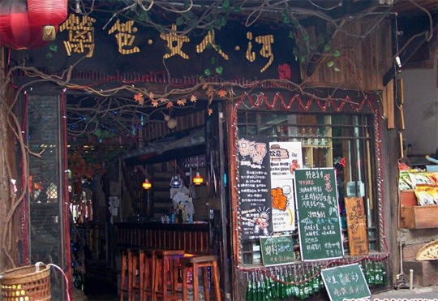

凤凰城内一日游
发布时间：2014-11-20
行程亮点:
古镇风情 历史人文 美食
一天的时间最好在城里逛逛，游览古城的精华。
沈从文故居——熊希龄故居——沱江——虹桥
随着潺潺的沱江水声醒来，开始参观古城的人文景点，品味古城的文化气息。沈从文故居、古城墙城楼、杨家祠堂、熊希龄故居等，追随着历史和文人的脚步，深入了解凤凰古城。
傍晚沱江泛舟，体验夕阳西下中的古城暮色，欣赏沱江醉人风光、红灯笼高高挂起的吊脚楼群、虹桥、青山绿水掩影中的夺翠楼（黄永玉画室）等著名景点。驻立江边的万名塔，走在古老悠长的青石板街，您会看到各式各样的银器，叫人馋涎欲滴的小吃，叫不出名的土特产，让人惊叹的苗家老太的剪纸……
餐饮：
凤凰内有许多特色小吃，可以尽情感受这不一样的口味与风情。根据旅客的不同偏好，选择在古城内的各色小吃店就餐。

住宿：
建议选择在凤凰县城内居住各种别具古镇风情的旅馆，既方便游玩，也可观赏到江景与酒吧一条街的繁华。
回复